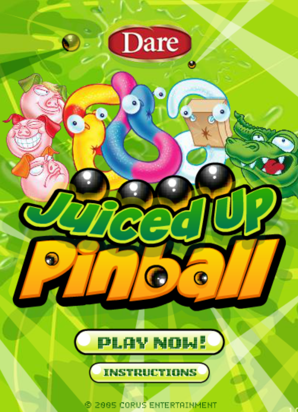

'Juiced Up Pinball!' was a game made in the now deceased software Adobe Flash. It's a cult classic flash game that was released in 2005! It's a kitschy brand tie in game made by the Canadian food company Dare Foods. The game is one of my personal favorites. It's good simple fun, and what else would you want a game to be?

Instead of starting out with a bunch of flickering lights and bumpers, you start out with 300 free points and 3 free balls to build your pinball table however you'd like! You usually start out with buying two flippers, but there are other viable strategies to do as well. The goal is to meet your point quota so you can buy more balls to play with. If you want to play this game, I'd HEAVILY recommend installing Flashpoint. It's an archive with almost every flash game! It's user-friendly, runs great on almost any device, and it's all around the best option. If you'd rather play it online, I'd recommend going to Flash Museum. I don't have much experience with it personally, but it's talked about online a lot.
The gameplay loop can be summarized with 4 easy steps!
© Copyright 2026, John Musialek.